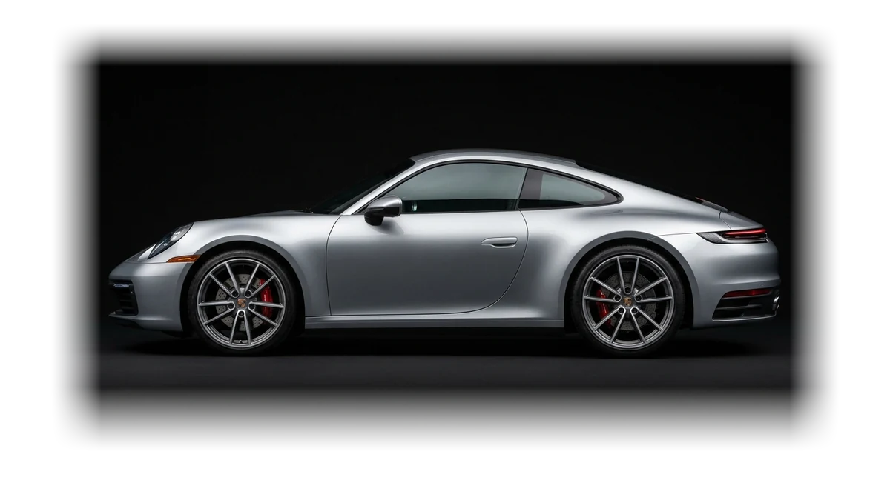
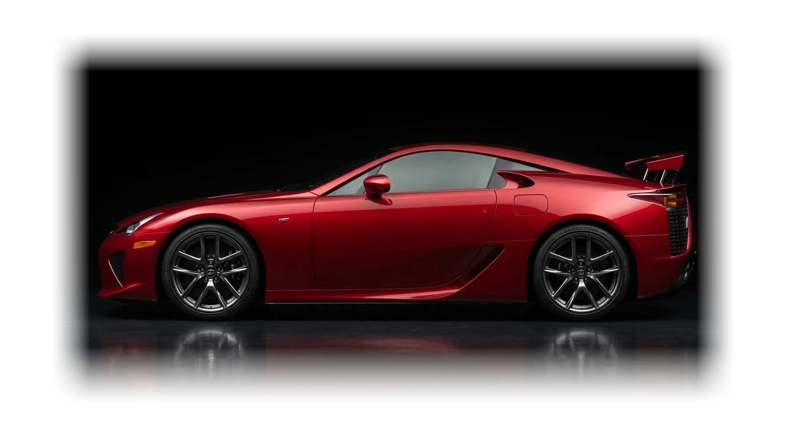
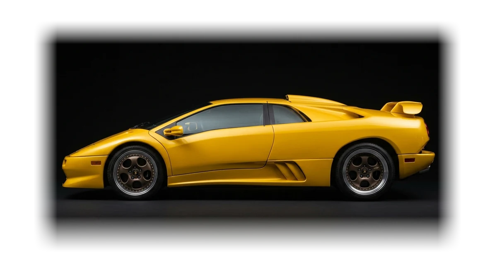
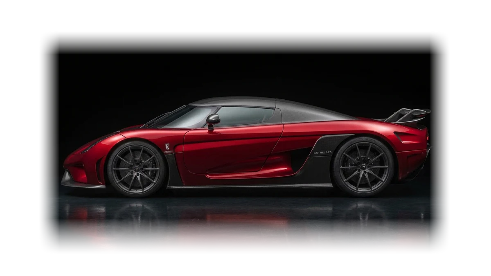
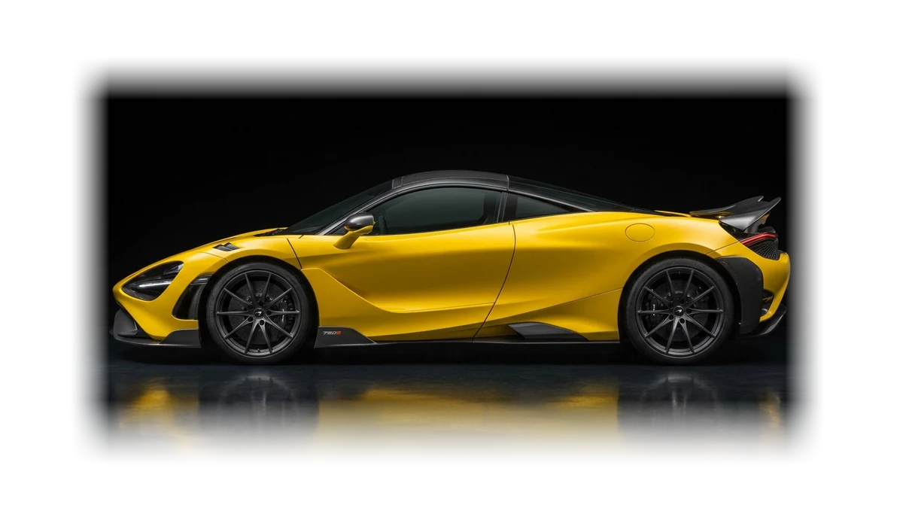
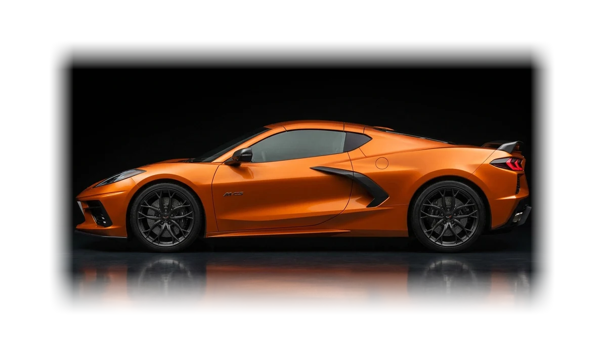
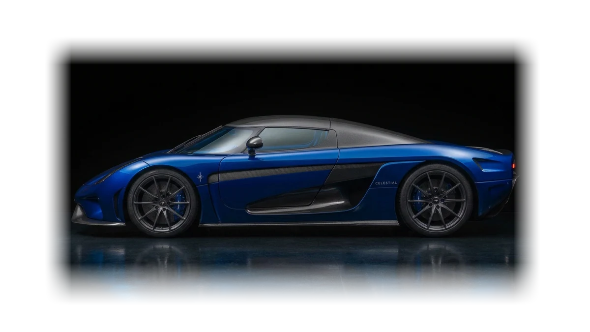

Sports coupé
Argento
Silver paint, red calipers and a shape that hasn't needed changing. The one you take out on an ordinary Tuesday.
- 480hp
- 3.4s0–100 km/h
- 305km/h top
- 2+2seats

Sports coupé
Silver paint, red calipers and a shape that hasn't needed changing. The one you take out on an ordinary Tuesday.

V10 · Coupé
Deep red over carbon, a rear wing that rises at speed and a V10 that revs faster than a needle can follow.

Heritage · V12
The poster car. A wedge from the nineties with a V12, a gated manual and no interest in being sensible.

Hypercar
Candy red over bare carbon, a twin-turbo V8 and more power than the tyres have any right to handle.

Lightweight
Stripped, stiffened and painted so nobody misses it. Carbon everywhere the eye lands and several places it does not.

Mid-engine · V8
The engine moved behind the seats and everything changed. Supercar shape, everyday manners.

Hypercar · Grand tourer
The Vento's quieter sibling. Deep blue over bare carbon, with the same shove and a longer stride between fuel stops.
